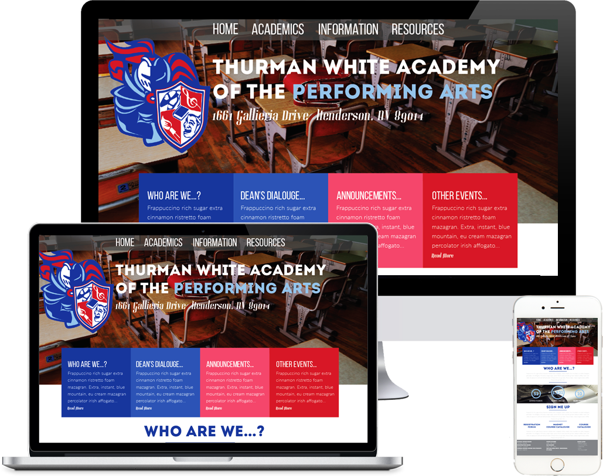

THURMAN WHITE
http://newthurmanwhitems.com

One of my first large scale projects, Thurman White Academy of the Preforming Arts was a client that I worked with during an internship with Studio C, I was apart of a fairly sized group of four people and each of us were given multiple pages to work on. However, I was tasked with making the homepage for the site, which gave me the ability to lay down the ground work for how the rest of the site would look. I prompted to go with a very open design and a color scheme that reflected their logo so that the site would be professional but, also not too intimidating.